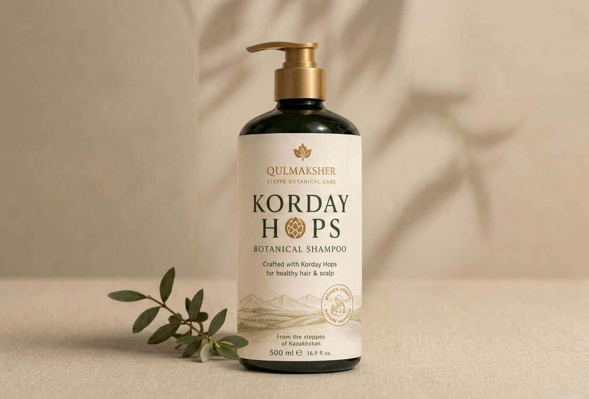
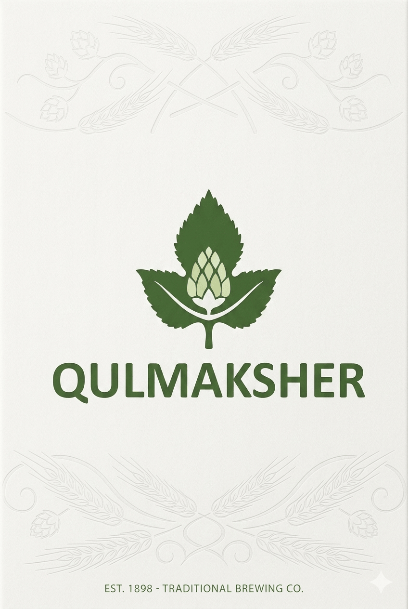
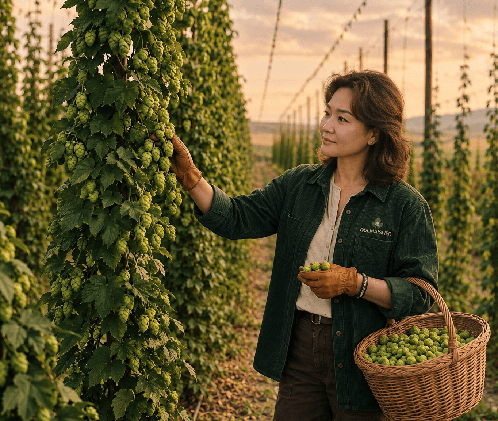
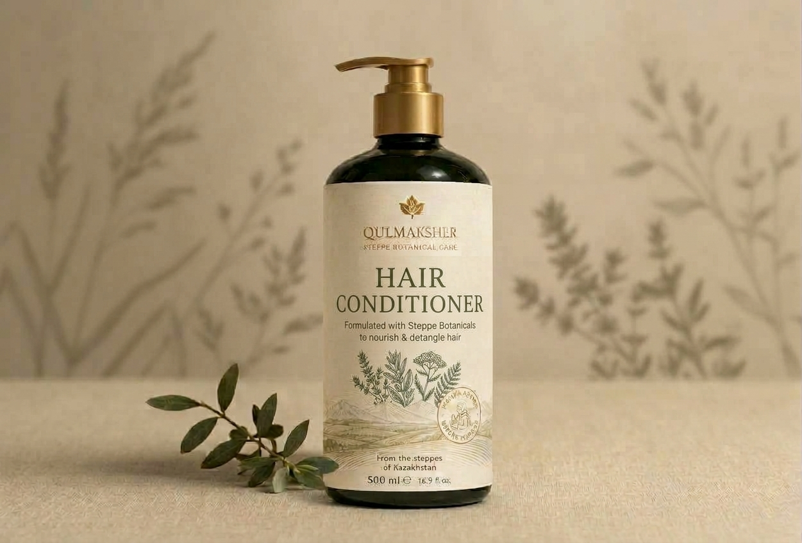
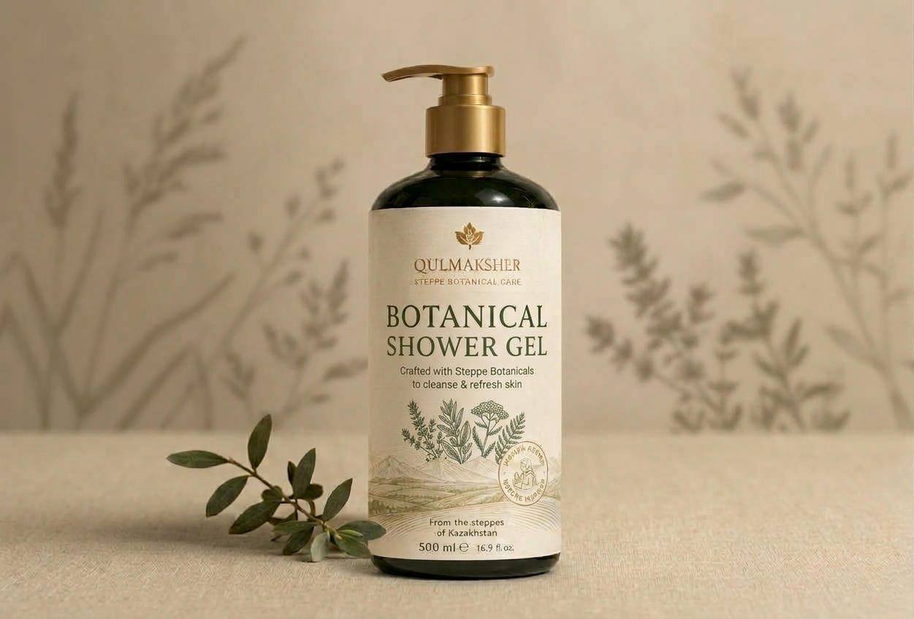
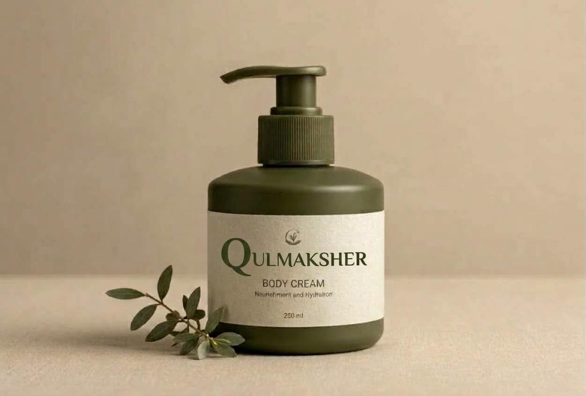
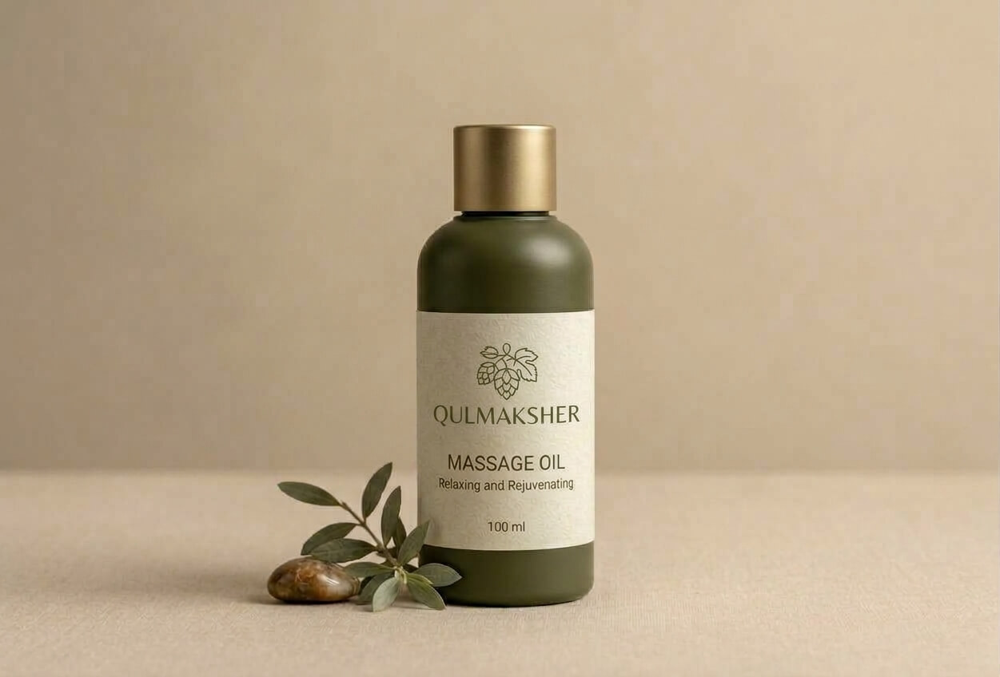
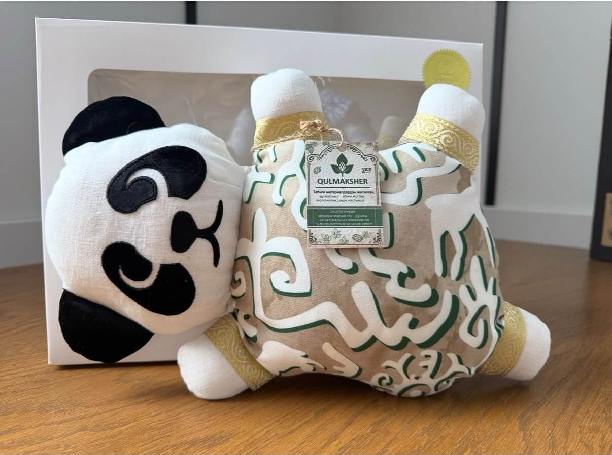
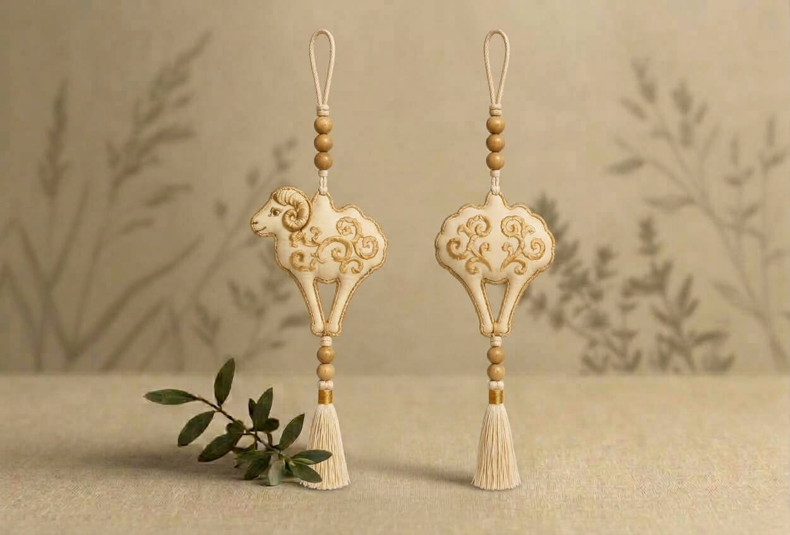
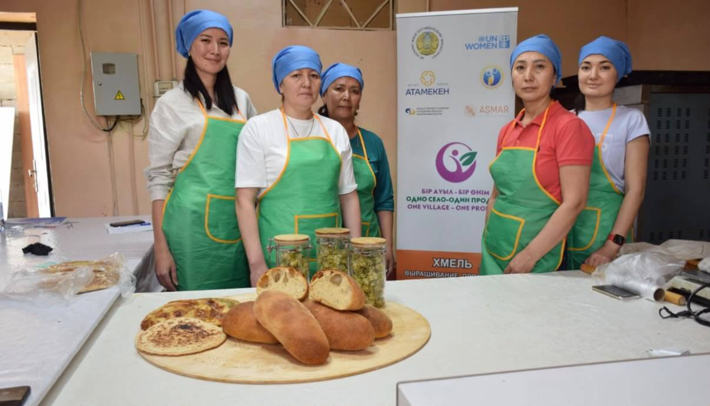

Шампунь Qulmaksher «Укрепление от земли»
Направлен на бережное очищение, свежесть и уход без ощущения пересушенности.
Линейка продуктов на основе Кордайского хмеля и степных трав. Природные растительные экстракты помогают коже и телу справляться со стрессом, улучшают качество сна и поддерживают организм в условиях высокого темпа жизни.


Высокий темп жизни, дедлайны и постоянное напряжение — реальность современного человека. Степные растения Кордайского региона выживают в условиях жесткого климата и обладают естественной устойчивостью к внешним факторам. Бренд Qulmaksher переносит эту силу адаптации в продукты для вашей ежедневной рутины, помогая организму справляться с нагрузками и стрессом.
Природные компоненты Кордайской степи для поддержки организма в ритме современной жизни.
Естественная поддержка нервной системы для расслабления, внутреннего равновесия и восстановления после насыщенного дня без использования искусственных стимуляторов.
Восстановление физических и эмоциональных ресурсов после интенсивных нагрузок и тяжелого дня.
Посмотрите, как рождаются продукты из Кордайского хмеля.
Вы не живёт в идеальных условиях. Сухой воздух, перепады температур, ежедневные укладки, городской ритм — кожа и волосы постоянно сталкиваются с внешними нагрузками. Линия «Сила Степи» объединяет пять средств с Кордайским хмелем для ежедневного ухода.
Не меняйте свой ритм. Измените подход к уходу.
Направлен на бережное очищение, свежесть и уход без ощущения пересушенности.

Помогает вернуть волосам природную мягкость, естественный блеск и защищает от агрессивных факторов городской среды.

Разработан для очищения кожи после активного дня. Ощущение свежести и расслабления превращает обычный душ в личный ритуал переключения с дел на отдых.

Направлен на уход за кожей, испытывающей воздействие сухости и перепадов температур. Увлажненяет, питает и поддерживает естественный защитный барьер.

Дает мягкое скольжение, способствует расслаблению, питанию и смягчению кожи. Мёд помогает поддерживать защитный барьер, оставляя кожу гладкой и бархатистой.
Текстильные изделия с натуральным растительным наполнителем. Природные свойства кордайского хмеля помогают снять эмоциональное напряжение, способствуют мягкому расслаблению и настраивают на глубокое восстановление во время отдыха.
Мягкий уют степного вечера в вашем доме.
Мягкая подушка с кордайским хмелем для спокойного и безмятежного сна. Идеально подходит для вечерних игр с гиперактивными детьми, помогая им плавно переключиться на режим отдыха.

Для дома, автомобиля и праздничного декора. Натуральный источник спокойствия, который всегда с вами. Саше помогает снять стресс в дороге или создать уют дома, а благодаря изящному дизайну может использоваться как стильное украшение.

Альтернатива традиционному хлебу для сбалансированного рациона . Натуральный состав без добавления промышленных дрожжей . Смесь позволяет легко получить свежий домашний хлеб в духовке или приготовить быстрый хлебец в микроволновке.
Традиции кордайской закваски для здорового питания.БАДЫ
Забота о себе начинается с того, что вы выбираете каждый день.
Растительные комплексы на основе кордайского хмеля и других степных растений. Новое направление Qulmaksher, в котором традиционное сырьё становится основой для экспертных разработок и создания современных продуктов для дополнения рациона.
Не просто традиция. Растение, возможности которого мы продолжаем раскрывать.
Статус: В разработкеЛИМОНАДЫ И НАПИТКИ
У свежести тоже может быть свой характер.
Кордайский хмель открывает неожиданную сторону привычных напитков. Безалкогольные лимонады и растительные композиции с выразительными травяными оттенками, необычными сочетаниями и собственным вкусовым почерком. А так же примеяется ферментация для получения напитков с потенциально полезными свойствами для микробиома кишечника.
Попробуйте степь на вкус.
Статус: В разработкеМЁД С ХМЕЛЕМ
Когда привычная сладость приобретает особый характер.
Натуральный мёд и кордайский хмель — встреча двух природных вкусов. Медовая сладость и выразительные растительные ноты создают необычное гастрономическое сочетание.
Мёд, который хочется не просто попробовать, а распробовать.
Статус: В разработке